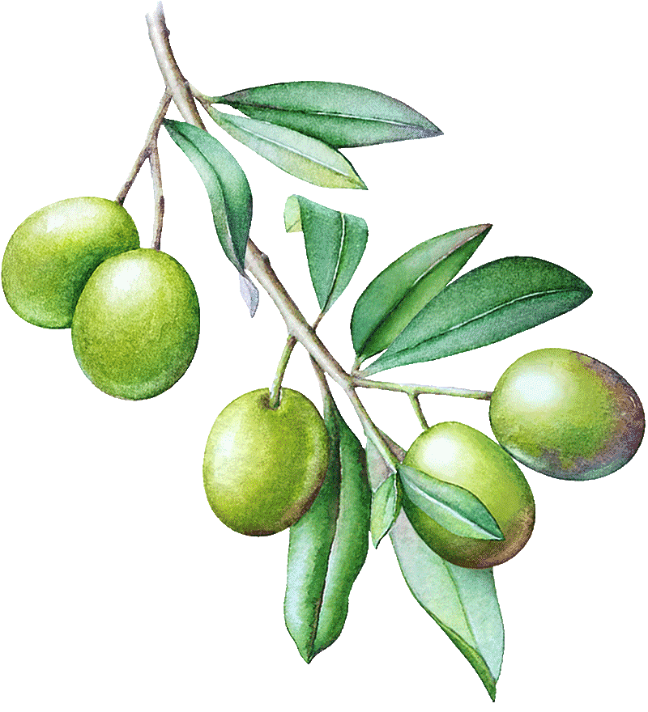
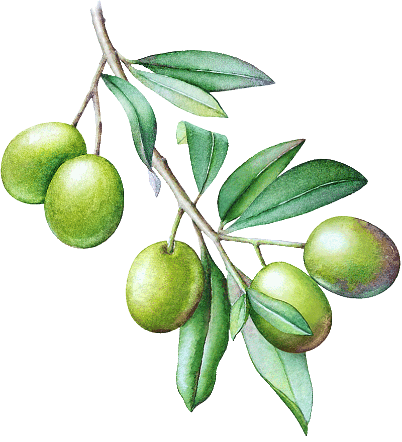

엘리안느 라디그 (1932년생, 파리)
LOOFTBSWEB
바이오제네시스, 1973, 사운드, 21분
라디그는 아들을 임신했을 때와 딸이 첫 손주를 임신했을 때의 태아의 움직임을 녹음한다. 맥박과 심장의 박동을 소재로, 청진기와 마이크, ARP 신디사이저 만을 사용하여 <바이오제네시스>를 작곡한다. 고주파음의 점진적인 변화와 음악적 내러티브의 전개 방식을 고민한 작업이다. 작업의 제목 <바이오제네시스>는 ‘생물속생설’을 말한다. 이는 신이 생물을 창조했다는 ‘자연발생설’과는 상반되는 개념으로, 살아 있는 생물은 반드시 살아있는 것으로부터 나온다는 이론이다.
라디그는 1970년대 티베트 불교로 개종하여 파오 린포체Pawo Rinpoche 구루와 함께 3년간 수행한다. 라디그는 ARP 신디사이저가 음을 명상하듯 해석하는 방식에 많은 잠재력을 가지고 있음을 발견한다. 주파수와 모듈레이션 같은 매개 변수를 최대 40개까지 조금씩 변경하여 사운드를 제작한다. 구체음악의 스승이었던 남성 작곡가 피에르 쉐페르와 피에르 앙리의 12음 기법과는 상반되는, 라디그 자신만의 작곡 방식이다. 라디그는 말한다. “내 작곡은 언제나 극적 변화를 피해왔으며, 이는 여전히 내 작곡의 규칙이다. 모든 음은 매우 느리게 변화한다. 음이 변화하고 있다는 사실조차 알아채지 못할 정도로 느리게 전개된다.”
파리를 기반으로 활동해 온 엘리안느 라디그는, 라디오에서 구체음악 예술가 피에르 쉐페르의 <철도에서 연구L'étude aux chemins de fer>를 듣고 감명을 받는다. 프랑스 국립라디오텔레비전방송국 스튜디오Studio d’Essai of RTF Paris에서 구체음악의 주요한 또 한 명의 예술가 피에르 앙리Pierre Henry와 함께 일하면서, 자기 테이프를 조작하고 테이프 피드백 기술을 마스터하는 법을 배웠다. 1970년대 라디그는 미국으로 이주하여 뉴욕 대학교, 아이오와 대학과 캘아츠의 음악 스튜디오에서 ARP 2500 신디사이저의 비트를 결합한, ‘의도적으로 느린’ 사운드를 작곡했다. 1975년 티베트 불교도가 된 라디그는, 1988년 <죽음의 삼부작La Trilogie de la mort>을 발표하기 시작한다. 그의 사운드 작업은 정확하고 정밀한 디테일을 기반으로 반복되는 피드백과 루프가 특징이다. 지금까지도 전 세계에서 교감하는 음악가들과 긴밀히 협력하여 어쿠스틱 사운드 작업을 만들고 있다. 50여년간의 업적을 인정받아, 2006년 아르스 일렉트로니카에서 황금 니카상을, 2019년 독일 ZKM에서 전자음악을 위한 기가-헤르츠상을 수상했다. 그는 일렉트로 어쿠스틱 음악의 가장 영향력 있는 선구자 중 한 명으로 평가받는다.
타니아 레온(1943년생, 하바나)
LOOFTBSWEB
수평선, 2008년, 사운드, 8분 56초
타니아 레온은 함부르크의 NDR 심포니 오케스트라를 위해 <수평선>을 작곡했고, 1999년 7월 해모니알레 페스티벌Hammoniale Festival에서 페테르 루직카Peter Ruzicka가 지휘를 맡았다. 2000년 8월 이 곡은 스테판 애즈버리Stefan Asbury가 지휘하는 탱글우드 뮤직 페스티벌Tanglewood Music Festival에서 미국 초연을 했다.
라틴 아메리카 음악, 재즈와 가스펠 음악 등 다양한 장르를 현대 테크놀로지와 결합하는 작곡을 한다. 쿠바 태생인 레온의 음악은 춤추는 행위가 일상인 쿠바 문화가 녹아 있다. 레온은 곡의 전개를 자전거 타기에 비교하며, 리듬이 아닌 움직임이 작곡의 주요 요소라고 말한다. 그의 음악에서 리듬과 전개는 신체적 움직임과 연결되어 있다. 레온의 작곡은 현대적 문법, 기술적 완성도, 정교한 어휘, 조밀한 리듬 레이어링과 같은 방식으로 완성된다.
레온은 작곡가이자 지휘자로 뉴욕을 기반으로 활동 중이다. 그는 자신의 성별과 인종에 대한 편견과 선입견에 늘 마주해야 했다고 말한다. “내 피부색의 여성이 진지한 음악을 지휘하는 것은 흔치 않습니다. 남성 지휘자 보다 배는 잘해야, 인정을 받을 수 있었죠.”
타니아 레온은 뉴욕을 중심으로 활동하는 작곡가이자 지휘자로 예술 기관의 고문을 담당하고 있다. 작가는 뉴욕 필하모닉의 ‘뉴 뮤직New Music’을 포함한 다수의 기관에서 고문을 맡았다. 또한 뉴욕을 거점으로 활동하는 작곡가들을 지원하는 ‘컴포저 나우Composer Now’의 설립자이자 예술감독이다. 작가는 뉴욕 필하모닉, 로스앤젤레스 필하모닉, 인터내셔널 컨템포러리 앙상블, 카사트 사중주단과 우슐라 오펜스에서 의뢰한 작업들을 포함하여 활발한 활동을 전개하고 있다. 레온은 미국 문학예술 아카데미American Academy of Arts and letters와 미국 과학예술 아카데미American Academy of Arts and Sciences 기관에 초대받았다. 프롬, 쿠세비츠키, 구겐하임 재단에서 레온의 공로를 인정받았으며, ASCAP 빅터 허버트 어워드, 그리고 미국 아티스트 펠로우십USA Artist Fellowship(2018)을 수상했다. 타니아 레온은 현재 뉴욕시립대학교 명예교수로 재직 중이다.
민예은 (1986년생)
이게 맞나,2021년, 비디오+사운드, 3분 14초
입에서 입으로 전해 내려오는 민요는 당대의 ‘공감’이 있어야 계속해서 지속되어 전해져 올 수 있다. 민요는 삶을 살아가는 이야기, 소리에 가깝다. 시대의 변화로 전통적인 민요형태의 노동요는 사라질 위기에 처해 있다. <이게 맞나>는 지속 가능한 민요일까? 목소리를 타자의 영역으로 확장하기 위해 스스로가 아닌 타인의 입을 통해 소리가 전달되도록 한다. 가사를 질문의 형태로 구성한다는 것은 어떤 의미일까? ‘질문’의 사전적 정의는 ‘알고자 하는 바를 얻기 위한 물음’이나 <이게 맞나>에서 질문은 답을 찾기 위한 물음이 아니다. 답을 내릴 수 없고 내린 답에 대한 확신이 없고 답을 내릴 필요도 없다. 답을 해야 하는가? 자체가 질문이다. 계속 질문해야 한다. 이전부터 질문을 해왔고 질문을 하고 있고 앞으로도 질문해야 한다. 적어도 질문을 통해서 우리는 각자가 나아가야 할 대략적인 방향 혹은 나아가지 말아야 할 방향은 감지할 수 있지 않을까. <이게 맞나>는 서도민요 사설난봉가에 가사를 새로 붙였다. 소리는 국립전통예술중학교 학생들이 함께했다. 기획 - 민예은 작곡 미상 (사설난봉가, 황해도 민요) 작사 - 민예은, 최건 소리지도 - 오세정 소리 - 국립전통예술중학교 학생들 (김규리, 김여원, 노예주, 성은비, 안지우, 윤현서) 사운드 녹음 및 편집 - 그루브앤밸런스 영상 편집 - 신나라
민예은 (1986년생) 민예은은 프랑스 클레르몽 메트로폴 미술대학교에서 학사와 석사과정을 마쳤다. <예측할 수 없는 투명함, 대안공간 루프, 서울, 2019>, <Sens Dessus Dessous, 주프랑스 한국문화원, 파리, 2015> 등 4회의 개인전과 <타임리얼리티: 단절, 흔적, 망각, 코리아나미술관, 서울, 2019>, <De la nature des liens, Cabane Georgina, 마르세유, 2017>, <있다, 잇다, 있다, 예술의전당, 천안, 2017> 등의 단체전에 참여했으며 <트라이앵글 예술협회 레지던시, 뉴욕, 2019>, <국립현대미술관 고양레지던시, 2018>, <시테 국제 레지던시, 파리, 2015> 등의 입주작가로 활동했다. 민예은의 작업은 이질적 문화에서 오는 모순, 불편함, 무질서, 분산, 부조화, 간섭 등의 개념에서 출발한다. 작품의 개체는 서로 관계를 맺고 영향을 주면서 수많은 중심을 이루고 동등한 사이를 형성한다. 작가는 다양한 매체를 결합하고 혼용하는 ‘혼성화’를 통해 사회적 차원의 의사소통과 교류, 적절한 문화적 공유구역을 탐구하고 있다.
옹기종기, 2021
2020년 12월 겨울, 서울에 첫눈이 오기 시작할 무렵에 채취한 “청계천의 물”이 담긴 9개의 항아리 위에 앉아 사람들이 노래를 부른다.
<여인의 섬 ÎLE AUX FEMMES> 혹은 <여인의 섬 The Island of Women>S 비디오, 13분
프랑스 브르타뉴 지방에 위치한 작은 섬에서 그 지방에서 모은 여자들이 부르는 민요 그웨르츠(Gwerz) 가락에 제작당시 (2019년 여름)의 이야기들을 첨가해서 만든 노래들을 안느 로레(Anne Laure)와 클레망스(Clémence)와 함께 부른다. 그웨르츠는 사실적인 서사노래로 신문의 역할도 했다. 노래 - 안느 로레 방센(Anne Laure Vincent), 클레망스 미모(Clémence Mimault) 녹화 - 피에르-필립보 투페찬(Pierre-Philippe Toufektchan) 제작지원 – 라크리에 아트센터(La Criée Centre d’art contemporain de Rennes) 빛을 향해 위치한 여인의 섬(l‘ÎLE AUX FEMMES)은 프랑스 브르타뉴 북쪽 해안지역(Côtes du Nord de Bretagne) 펭베낭(Penvénan) 지역에서 썰물 때 접근이 가능하다. 우리는 1950년대 낭트(Nantes)지역에서 수집되어 전해져 오는 외설스러운 가사의 노래들을 종종 듣게 된다. 여기서 극단적인 지역어들(방언)이 스스럼없이 섞여 사용되기 때문에, Linette Gendron은 가사속의 ‘구두’를 ‘바구니’로 바꾸어 부르는 것을 용인했다(구전되었기 때문). 우리로 하여금 Patrice Coirault의 작업에 감사하도록 하며 이는 <DEPATTURE>를 떠올리게 한다. <DEPATTURE>는 우리가 푸아토(Poitou) 지역의 이 섬에서 여성들에 의해 불려 졌던 가벼운 노래들에 대해 조심스럽게 연구를 시작하기 이전에 작업했던 것이다. 어떠한 오해로부터 시작된 이 작업은 바구니 만드는 사람들이(vannières) Santa María Ixcatlán에서 바구니나 챙이 넓은 모자를 땋거나 짜면서, 세상 모든 것에 대해 떠들어대며 비웃는 사람들의 모습을 보여준다. 동시에 우리가 TV나 인터넷으로부터 벗어나 일하며 노래하는 사람들을 상상하게 한다. 이는(앞서 언급한 행위) 건강에 좋을 것이다. 아무리 가치 있는 일이라도 그것이 지나치게 반복적인 일이라면, 사람들은 지루한 노동의 반복성으로부터 도망치기 위해 음악이 가진 은유(la métaphore)의 힘에 호소하며 노래해왔을 것이다.
이슬기 (1972년생) 1992년 이래로 파리에 거주하고 있는 작가는 경험을 통한 포괄적 공예 실천과 언어와의 교차점, 상관관계에 주목하는 작업을 해오고 있다. 작가는 한국 속담을 기하학적 문양으로 시각화하여 이불을 매체로 이를 담아내는 작업(통영의 누비 이불 장인들과 협업) 및 멕시코와 모로코 등지에서의 경험을 비롯하여 동시대적 조형언어를 구축해 왔다. <우리는 대칭이 아니다, 알마다시립미술관, 알마다, 2020>, <빠를수록 이틀이 좋다, 라크리에 아트센터, 렌느, 2019>, <다마스스, 갤러리 주스 앙트르프리즈, 갤러리현대, 2017-18> 등의 개인전과, <ㄱ의 순간, 예술의전당, 서울, 2020>, <내 나니 여자라, 수원시립미술관, 수원, 2020>, <부산비엔날레, 부산현대미술관, 2020>등 다수의 단체전에 참여한 바 있다. 이슬기는 현재<올해의 작가상, 국립현대미술관, 서울, 2020>에서 <동동다리거리> 프로젝트를 선보이고 있으며, 이듬해인 2021년 파리 퐁피두센터에서 개최될 그룹전 <악셀레라시옹>을 준비중이다.

표범의 눈, 2021년, 비디오(애니메이션), 3분 40초
<표범의 눈>은 단편 애니메이션 영상으로 정글에 사는 네 명의 인간들과 표범의 만남을 다룬 일화이다. 과거 인류는 수많은 세월을 자연의 일부분으로 살아왔고, 자연을 배움의 대상, 존경의 대상, 신비로운 존재로 여겨왔다. 또 자연은 인간이 식량을 채취하고, 삶을 영위할 수 있는 생명의 공간인 동시에 인간의 생존을 위협하는 요소들이 존재하는 냉혹하고 무자비한 투쟁의 공간이기도 하다. 인간은 협동을 통해서 자연 속에서 생존해 왔다. 이번 코로나 바이러스의 전 세계적인 확산은 이러한 개인과 개인 혹은 집단 간의 협동이 현대의 시점에도, 인류 전체의 생존을 위해 더욱 중요해졌음을 증명한다. 인간이 자연의 지배자로 스스로의 자리를 확고히 함으로써, 인간은 지구 상에서 두려울 것이 없는 존재가 되었으나 인간과 자연 사이의 지배와 종속, 권력 관계는 인간들 사이의, 인간 집단 간의, 국가 간의, 인종 간의 갈등으로도 표출된다. 나는 이 작업을 통해서 인간이 자연의 지배자가 됨으로써 동시에 인간 간의 관계에서 무엇을 잃었는가에 대한 질문을 함으로써 현재 우리가 경험하고 있는 혼란의 원천을 상징적으로 이해하고자 한다. 작품 <표범의 눈>에서 표범은 인간이 신성하게 여기던 자연(남아메리카에서 표범은 신적인 존재)을 나타낸다. 한 때 신적인 존재였던 표범이 하나의 물건, 혹은 상품화됨으로써 인간은 자연을 자신의 욕망을 투영할 수 있는 거울로 삼는다. 애니메이션을 제작하면서 자연사 박물관의 디오라마(diorama)의 사실적이지만 정지된 혹은 얼어붙은 듯한 자연의 느낌을 참고했다. 음향은 사운드 디자이너이자 음악가인 크리스챤 아미고(Christian Amigo)가 작곡 편집했다.
Black Snow, 2019, 비디오(디지털 애니메이션), 11분 13초 13sec
미국 정부는 1946년부터 1958년까지 67회에 걸쳐 마셜제도(Marshall Islands) 에서 원자폭탄 실험을 단행했다. <블랙 스노우(Black Snow)>는 원폭 실험들의 아카이브 영상자료(archival footage)와 현재까지도 지속되는 위협들을 바탕으로 한 이야기이다. 첫 실험은 크로스 로드(Crossroads)라는 작전명 하에 비키니 환초(Bikini Atoll)에서 일어났다. 이 곳에서 멀리 떨어진 곳에 거주하던 원주민들은 실험에 대해 제대로 통보받지 못했기에 (앞으로 닥칠) 방사선의 파괴적인 영향을 알지 못했다. 일부 원주민들은 핵폭발로 인한 방사능 낙진을 눈으로 착각하여 섭취하기도 했다고 전해진다. 원폭 실험 이후 미국 관료들은 원주민들에게 주식의 일부였던 코코넛과 같은 현지 음식을 먹지 말 것을 권장했다. 대신, 미국 정부는 가공 식품과 통조림을 제공하였는데 이는 원주민 인구의 당뇨병, 비만 그리고 다른 건강 문제들의 발생 비율을 증가시켰다. 원주민들에게 ‘무덤(Tomb)’이라고 불리는 이 콘크리트 돔 안에는 실험 후 매장된 핵 폐기물들이 묻혀 있는데, 해수면 상승과 바닷물로 인한 부식 효과로 균열이 생겨 바다와 육지에 독성 물질을 방출하고 있다. 이 콘크리트 돔은 20,000년 동안 유지되어야 했지만, 방사선은 60년 후 마셜제도의 주민들(Marshallese)과 태평양의 생태계를 위협한다.
Magic Kingdom, 2020, 웹 기반 게임
‘Success’는 도널드 트럼프 전 대통령 향수(cologne)의 명칭이다. 이영주 작가는 700여개 아마존 리뷰들을 자본주의 오토마톤 제국(미국)에서의 자유, 남성성, 그리고 경제적 성공에 대한 개념으로 치환하여 게임에 적용했다. 게임에서 향수병들이 트럼프의 성을 지키는 병정들처럼 줄지어 서 있는데, 이들은 아득한 거리에 위치하지만 위협적인 경제대국이라는 망령으로 존재한다. 그러나 향수병들은 2차원적이며 얇고 연약하다. 이들을 넘어뜨려 무찌르는 게임 참가자들은 이상한 나라의 앨리스가 하트여왕의 궁전을 지키는 카드 병정들을 맞닥뜨리는 상황을 연상하게 한다. 병정들/향수병들/카드 패들은 ‘얄팍한 상태’임에도 불구하고 제왕의 권력을 보호하는 역할을 수행한다. 참가자는 이 향수병들의 바다에서 미국 자본주의 이데올로기의 부조리에 빠져들게 되고, 진정으로 ‘Success’를 구매할 수 있을지에 대해 고민하게 된다.
스시우먼의 노래, 2016, 비디오(애니메이션 뮤직비디오), 4분 47초
<스시우먼의 노래>는 작가가 작사 작곡한 뮤직비디오로, 가사의 내용은 작가가 독일 유학생활 당시 매일 같이 경험했던 아시아 여성을 향한 노골적인 성적 희롱에 대한 답신이다. 회전 스시 접시들 위에 올려진 작가는 자신의 몸을 얇게 잘라진 스시 살점과 같이 누구나 먹기 좋은 존재로 변형시켜 자신을 섭취하기를 권한다. 동시에 그녀는 그녀의 이미지를 먹는 사람에게 그것이 그저 임시적이고 가벼운 환영임을 환기시킨다. 가사 후반부에서는 이러한 성차별에서 더 나아가 인종 차별, 이방인, 타인에 대한 고정 관념과 섣부른 판단에 대해 문제를 제기하고, 이것이 어떻게 인간 간의 관계와 경험을 제한하는 지에 대해 노래한다.
이영주 (1987년생) 이영주는 홍익대학교 회화과를 졸업하고 독일 프랑크푸르트 슈테델슐레 미술대학에서 영상과 마이스터 슐러를, 풀브라이트 장학생으로 미국 예일대학교 조소과에서 석사 학위를 받았다. 이영주의 작업은 현대 사회에서의 개인적, 그리고 집단적 경험과 신화의 교차점에 주목하여 이를 바탕으로 또 다른 신화적 서사, 혹은 공상과학적인 서사를 애니메이션, 퍼포먼스와 드로잉 등으로 구현한다. <MINE, Ochi Projects, 로스앤젤레스, 2018>와 <생존자들, Basis Projektraum, 프랑크푸르트, 2014> 등의 개인전을 개최했고 <오토세이브, 커먼센터, 서울, 2015>, <쿠리치바 비엔날레, 2013> 등 주요 그룹전에 참여했다. <Open Sesssions, 드로잉센터, 뉴욕, 2018-20> 등의 레지던시 활동을 하였으며 현재는 하버드 대학교 영화 연구소의 펠로우 (2020-21)이며 동 대학의 미디어 프랙티스 부문 연구원 (2018-20)이었다.

스위치, 2014년, 오브제(드로잉), 266X315cm, 물소가죽(Buffalo hide)
소 한 마리의 가죽에 작가의 자작시와 드로잉들이 인두질로 새겨진다. 삶과 죽음을 다루는 시는 누군가 사랑과 실연의 고통으로 도피처를 찾게 될 때 우리의 내적 자아에 스위치를 켠 연인과 바람과 바다 그리고 절벽의 공간에서 마주하길 소망한다는 것이다. 지금의 디스토피아적인 상황속에서 작업은 더욱 현실적으로 보인다. 제도로 길들여지거나 컨트롤 되지 않은 상태의 본연의 감각과 취향, 감정, 성적 지향(sexual orientation)등을 드로잉 한다. 이것들은 한결같이 뜨거운 인두로 지짐질 당하며 살아있던 동물의 피부에 타는 냄새를 진동시키며 그려진다. 가죽은 열에 사라져버린 몸뚱이들 지키려 버텨내지만 곧 뜨거운 열기에 오그라들고 만다. 여리고 약한, 깊히 들여다보기 전엔 알 수 없고, 누군가에게 쉽게 이야기할 수 없는 이야기들로 채워진다.
붉은 드로잉-프로젝트, 2020~2021년, 오브제(엽서작업, 낭독용), 각 15X21cm
질병의 시대에 고립된 상태의 삶을 살아가는 이들에게 엽서를 보낸다. 같은 시기를 보내는 작가의 일상은 마치 그림일기처럼 작은 종이에 그려지고, 변화된 일상과 감정의 상태를 함께 공유하며 아날로그적인 방식으로의 소통을 취한다. 엽서를 받은 이들은 각자의 방식대로 피드백을 취하게 되는데 작가와의 1:1의 관계로 혹은 불특정 다수를 향한 방식으로 확산될 수 있다. 이러한 유기적 소통의 방식은 전통적 예술교류 공간의 물리적 한계를 깨고 범람하는 전자매체의 시대에 사람과 사람간의 전달방식으로 연결되는 다소 느린 속도감을 느끼게 한다. 붉은 드로잉 프로젝트의 참여자 중 상당수가 해외 거주자들이며 팬데믹 상태에 대한 서로의 안부를 묻고 깊은 위로와 삶에 대한 숙고의 기회를 만들어보고자 한다.
수집된 기억들 2021년, 사운드, 2분 30초
오디오를 다루는 것에 능숙하지 못해 시도한 작업들이 소음에 그치기를 반복한다. 이런 오디오를 불가피하게 들어야만 하는 청취자의 괴로움을 알기에 적어도 들었을 때 긍정적인 기억을 소환할 수 있는 소리들을 채집했다. 불과 1년전만 하더라도 이렇게 채집된 평범한 소리들은 익숙하게 들을 수 있던 소리들이었지만 현재 마주한 팬데믹 상황에서는 오히려 일상적인 소리와는 다소 거리감이 느껴진다. 오디오는 작가가 과거에 촬영한 비디오에서 사운드를 추출해 연결된다. 이태리 시골 성당에서 울리던 종소리, 재즈클럽의 공연 소리, 나무조각을 하는 소리, 배고픈 길고양이가 사료를 먹는 소리, 오케스트라의 튜닝소리 등 과거의 이러한 순간들이 얼마나 귀하고 소중한 것인지를 작지만 아름다웠던 일상의 소리를 통해 전하고자 한다.
장지아 (1973년생) 장지아는 한국예술종합학교 미술원에서 조형예술학 학사, 동대학원에서 전문사 과정을 마쳤다. <노려본들 어쩔 것이냐, 두산갤러리, 서울, 2020>, <Omerta: 침묵의 계율, 대안공간 루프, 서울, 2007>, <중력의 중심은 어디인가?, 아트선재센터-서울아트시네마, 서울, 2004> 등 9회의 개인전과 <한국 비디오 아트 7090-시간 이미지 장치, 국립현대미술관, 과천, 2019>, <Feasts on paper, 펑시엔박물관, 상하이, 2019>, <무브 온 아시아: 동양적 은유, 대안공간 루프, 서울, 2012> 등의 단체전에 참여했다. 2014년 국립현대미술관 ‘올해의 작가상’, 2012년 두산문화재단의 ‘두산 연강상’을 수상했으며 2014년 두산 뉴욕 레지던시와 2006년 국립현대미술관 창동레지던시에 참여했다.
POP !, 2021, 설치 작업, 가변크기, 오브제(원형 코르크, 원형거울 여러 개)

작품 1. ‘몸’, ‘춤’ 두 글자가 합쳐진 이미지 작품 2. ‘축제’ 작품 3. ‘女’ ‘몸, 춤’, ‘축제’ 글자가 펑 소리를 내며 터지듯 코르크가 열린 형태 이미지의 원형 거울 동그란 형태의 <POP !> 의 설치 작업물은 ‘구멍’ 혹은 더 작은 ‘효모’나 ‘기포’를 연상시킨다. 무엇이 되었든 간에 동그란 형태의 코르크는 이제 막 ‘POP!’ 소리를 내며 터진 것 같은 형태로 열려 있다. 각각 터져 나온 이미지들은 세상과 상응하며 소통하는 형태다. 즉, ‘몸’, ‘춤’, ‘축제’ 등의 글자는 코르크를 조각내 터트리고 동시에 거울로 밖의 이미지를 드러낸다. ‘코르크가 열리며 흐르는 것’은 오랜 세월에 걸쳐 인간의 몸과 정신을 열어 흥과 춤, 예술을 이끌어 냈다. 그것은 의식이나 제사를 통해 시공간을 초월한, 죽은 자와 산 자를 잇는 발효한 것이다. 발효는 몸과 의식을 죽음과 삶 사이로 위태롭게 내몰면서 엄청난 공포를 만든다. 오랫동안 잘 발효된 것이 향기로운 이유는 끊임없이 느끼는 죽음을 받아들여 공포가 사라졌기 때문이다. 모든 죽음을 받아들이면 즐거워진다. 흥이 나고 춤이 나온다. 그것이 발효의 향기이다. 몸에서 발효 향기를 풍기며 세상과의 진정한 소통이 이루어 진다. POP ! POP ! POP ! 여기 저기 코르크가 터지며 은밀한 축제의 시작을 알린다. 이것은 너와 나, 그리고 세상이 반죽되어 합쳐지는 소통, 그 이상의 소리다. POP ! 자, 축제를 시작한다!
전미래 (1981년생) 전미래는 2009년 파리 국립고등미술학교를 졸업하고 2010년 포스트디플롬을 마쳤다. 파리1대학 소르본느에서 조형예술학 석사과정 중 심장에 문제가 생겨 2012년 귀국하였다. <삼합, 발효의 연식술, 미메시스 미술관, 파주, 2015> 등 네 번의 개인전과 <Move: On the Spot, 국립현대미술관, 과천, 2012>, <Random Access, 백남준아트센터, 용인, 2010>등 단체전에 참여했으며, 2014-2015년 경기창작센터와 2012-2013년 세마 난지미술창작스튜디오 레지던시에 참여했다. 2018년 한강예술프로젝트 <한강_예술로 멈춰. 흐르다,>에서 ‘수행성’ 관련 퍼포먼스를 선보였으며, 2016년 국립현대무용단 <이미아직> 공연에 시각예술 관련분야 참여 등 다수의 프로젝트에 참여한 바 있다.

나의 쌍동이 문어 Octo-8을 위한 노래, 2020년, 비디오, 10분 15초
나는 먹물을 가진 물고기(文魚octopus)와의 관계를 통해서 인간이 중심이 된 편협한 이데올로기를 뒤흔들어야 할 새로운 존재 양태의 언어 출현에 대해 상상한다. 인간은 여태까지의 지구의 언어를 소외시키고, 인간은 자신이 무엇이어야 했는지를 잊었다. 인간 중심으로 전개된 언어는 이미 지난 세기의 오랜 된 향수처럼 보인다. 이 새로운 존재 양태의 언어란 완벽한 언어를 벗어나야만 가능한, 실패를 통해서만이 가능한, 오염되고 혼종적인 언어이다. 이 혼종의 언어에 대한 실천으로 퍼포머들은 인간이 속한 공간에서 이동하여 물속에서의 문어에게 노래를 부른다. 이 노래는 새로운 공간에서 신체적으로는 지속 가능하지 않고 알아듣기 힘든 변형된 소통이자, 처음과 끝이 없는 과거와 현재 그리고 미래의 구조를 벗어난, 자아와 타자, 주체와 객체의 경계와 없는 언어이다. 이 작업은 갑작스러운 Covid-19의 상태로 인해 본래의 촬영 계획과는 달리 진행되었다. 나는 이 상황을 적극적으로 받아들이기로 했다. 나는 내가 있는 자리를 지키고 퍼포머들도 자신들이 있는 곳에서 퍼포먼스를 진행하였다. 나는 두 곳, 인도네시아와 한국의 퍼포머들에게 아주 기본적인 인스트럭션(Instruction)을 전달하여 자신이 해석하는 퍼포먼스를 수행하도록 하였다. 이 두 곳에서 일어나는 우연성도 있는 대로 받아들이고, 또 이 비디오 클립들을 본 후 나 자신의 의도도 처음 의도에서 자연스럽게 변화하도록 허락하였다. 이 작업의 과정은 많은 우연성이 겹치기도 하고 변화가 일어나는 혼란과 실패 속에서 언어적 해방에 더욱 다가가는 여정이었다.
미정, 2021년, 사운드
조은지의 사운드 작업 < >는 두 명의 인도네시아 사운드 아티스트 DJ Danger Dope와 MC Eloops의 협업으로 제작되었다. < >는 작가의 영상 작업 <나의 쌍동이 문어 Octo-8> (2020)의 수중에서 등장하는 노래를 비트를 기반으로 한 사운드 작업으로 제작되었다. 기획 - 조은지 수중 노래(Underwater Singing) - Eloops 편곡 및 비트작업 (Arrangement & Beats) - Danger Dope
조은지 (1973년생) 조은지는<두 지구 사이에서 춤추기, 대안공간 루프, 서울, 2020>, <열, 풍, 아트스페이스 풀, 서울, 2017>, <떨어지는 계란, 원앤제이 갤러리, 서울, 2016> 등 총 8회의 개인전을 개최했다. 주요 단체전으로는 <인류세: 한국 X 브라질 2019-2021, 일민미술관-브라질 상파울루 비데오브라질, http://videobrasil.online/비디오브라질 온라인 전시>, <생태 감각, 백남준 아트센터, 용인, 2019>, <불멸사랑, 일민미술관, 서울, 2019>, <배틀 베틀, 토탈 미술관, 서울, 2018>, <플라스틱 신화들, 국립아시아문화전당, 광주, 2015>, <땅, 흙이 말했다, 뒤셀도르프 페스티벌, FFF 뒤셀도르프, 2012> 등이 있으며2008년 네덜란드DCR레지던시에 참여했다. 조은지는 최근 먹물을 가진 물고기(文魚 octopus)와의 관계를 통해서 인간이 중심이 된 이데올로기를 흔드는 새로운 존재 양태의 언어를 보여주고 들려주는 작업을 해오고 있다.

Christina Kubisch
Tesla’s Dream, 2014, 사운드, 22분 56초
무선 에너지, 구리 코일, 자기장 유도, 리모컨 그리고 니콜라 테슬라에 관한 작품 나는 오래전부터 니콜라 테슬라에 매료되었다. 그는 전기 산업이 발전되기 이전부터 무선 통신을 상상했으며, 일반적으로 알려진 기술적 한계를 뛰어넘어 무선 제어 장치(radio controlled devices)및 기타 새로운 장치들을 고안했다. 테슬라는 1895년부터 뉴욕에서 30마일 떨어진 곳으로부터 무선 신호를 수신하고 있었다. 그는 오늘날의 다양한 전자 기기들과 통신 기술들의 발전을 이끈 선구자이다. 그가 고안한 새로운 방법들은 금전적인 문제와 이론적인 문제들로 실현시키기에 역부족이었으며 그로 인해 더욱 특별한 인물로 평가된다. 1970년대 말, 밀라노에서 전자공학을 공부하던 중에 테슬라 작품을 접하게 되었다. 그 시기는 음향 설비에 전자기기 유도 시스템 도입을 시작할 무렵이었다. 테슬라는 1882년부터 부다페스트에서 송수화기 증폭기(telephone amplifier)를 발명하고 특허를 받았는데, 이러한 정보를 알지 못한 채 나는 작은 코일이 내장된 간단한 송수화기 증폭기를 사용하여 사운드 설치작업을 했었다. 이후에 전자 유도(electromagnetic induction)방식을 도입한 작업들은 일상적으로 우리 주위에 숨겨져 있는 전자기장을 (소리로)들을 수 있게 특수 고안된 헤드폰을 쓰고 걷는 ‘도시 산책 시리즈’ <Electrical Walks>로 발전했다. 2012년, 슬로바키아 동남부에 있는 코시체(Kosice)에 위치한 작은 과학 박물관을 방문한 적이 있다. 그곳에는 많은 테슬라 기기들이 전시되고 있었고 그것들을 시험해 볼 수 있는 특별 허가를 받았다. 내가 고안한 특수(전기) 유도 헤드폰을 테슬라 기기에 연결하여 사운드를 들었을 때, 뇌우처럼 쏟아지는 전자기 소리에 사로잡혔다. 원격 전자 시스템을 도입한 작업을 결심한 바로 그 순간이었다. 어린시절 테슬라는 전기, 라디오, 자동차, 전화, 영화 등을 접하기 어려운 오스트리아(현재 크로아티아)의 작은 마을에서 자랐다. 소년시절의 그는 다른 어떤 것 보다도 자연을 사랑했다. 1893년, 그러나 이미 36세의 나이에 그는 10만개의 전등(그가 고안한)으로 시카고 세계 박람회(Chicago's World Fair)를 밝혔다. 그 때 이후로 빛, 라디오, 레이더 등과 관련된 새로운 기술들은 오늘날의 디지털 세계와 같이 놀라운 속도로 발전하고 있었다. 나는 항상 테슬라가 인터넷, 구글, 트위터, 페이스북, 기타 어플리케이션에 대해 어떻게 생각했을지 궁금해하곤 했다. 이것이 그가 전기 신호를 이용한 무선 전송 시스템을 발명할 때 염두에 둔 선견지명이었을까? 그의 작업 공간은 전선 없이 에너지를 전달하려고 했던 크고 무거운 코일들과 발전기들, 금속 송신탑 등으로 가득했다. 오늘날 우리는 디지털 통신과 저장소(storage)가 오직 대기(ether)속의 보이지 않는 파동에만 기반된 것이라, 테슬라의 장비보다 훨씬 크고 무거운 서버 룸을 필요로 한다는 사실을 망각한다. 작품 <Tesla’s Dream>은 오리지널 아르모니카(Armonica 또는 글래스 하모니카(Glass Harmonica), 19세기 악기) 소리와 오스트리아의 옛 기차역에서 녹음된 자기장 소리들(magnetic fields)을 시작으로, 브라티슬라바(Bratislava, 슬로바키아의 수도)의 옛 타트라(Tatra) 전차선로(지금은 자취가 사라져 가는)로부터 비롯된 전자 멜로디가 잇따라 흐른다. 이내 테슬라 기기의 소리가 차츰 시작된다. 사운드가 재생되는 동안 전자기 신호(electromagnetic signal)는 아날로그 기계의 소리에서 조명 시스템, 보안 시스템, 송전선, 은행, 지하철, 공항, 발전소 등 실제 현장에서 파생되는 소리로 변환된다. 디지털 통신의 다채로운 신호들이 서서히 합쳐서 사운드 구조를 뒤바꾼다. 이 구성은 라스베가스의 한 쇼핑 센터에서 녹음된 전광판 소리로 마무리되며, 대기(ether)속에 존재하는 다른 (전자)신호의 희미한 진동을 동반한다. 테슬라는 전기 에너지로 지구에서 가장 먼 곳까지 도달하길 원했지만 오늘날 더 이상 (도달할 수 없는)외딴 곳은 존재하지 않는다. 아르모니카 소리는 베를린에 위치한 악기 박물관(Musikinstrumenten Museum)에서 녹음되었으며, 다른 모든 사운드들은 Christina Kubisch가 고안한 헤드폰과 기타 다른 맞춤형 제작 장치로 녹음되었다. 전기장 소리(electrical field)의 원본 녹음은 오스트리아, 독일, 슬로바키아, 영국, 체코, 뉴욕, 라스베가스 등에서 제작되었다. 제작: Studio Hoppegarten, Visby International composer centre(스웨덴) 사운드 엔지니어링 및 마스터링: Ecki Güther
크리스티나 쿠비쉬 (1948년생, 브레멘) 크리스티나 쿠비쉬는 독일의 사운드 아티스트 1세대를 대표한다. 회화와 음악, 전자 공학을 수학한 뒤 베를린을 중심으로 유럽 및 세계 각국에서 다양한 활동을 펼치는 작가는 주로 70년대의 퍼포먼스, 공연 및 미디어 작업을 선보이며 자외선을 이용한 사운드 설치 및 조각 작업을 해오고 있다. 1970년대 말 쿠비쉬는 전자기 유도 작업을 시작하여 1980년 첫 사운드 설치 작업을 제작한다. 2004년 공공미술의 일환으로 도시 곳곳에서 발생하는 전자파에 주목한 작업인 <전자적 산책Electrical Walks>을 쾰른에서 소개한다. 작가는 공기중에 입자로 존재하는 도시 속 전자파를 오디오 신호로 변환하는 특수 헤드폰을 고안한다. 헤드폰을 쓴 관객은 도시 곳곳을 걸어 다니며 전자 기기 간의 상호 작용으로 인해 발생하는 새로운 소리를 듣게 된다. 이 작업은 베를린, 칼스루헤, 브레멘, 옥스포드, 뉴욕 등에서도 진행되었다. 작가는 2003년 이래로 다양한 뮤지션 및 댄서들과 협업을 하였으며 <Blurred Edges Festival, 함부르크, 2015>, <White Walls Have Ears, 홍콩, 2012>, <Invisible Geographies: Sound Art from Germany, 뉴욕, 2006> 등 다수의 전시와 페스티벌에 참여하였다. 2008년 독일 사운드 아트 어워드에서 디지털 음악부문 명예상을 수상하였다.

Shiva Feshareki
Vapour, 2020, 사운드, 4분 37초
오디오를 다루는 것에 능숙하지 못해 시도한 작업들이 소음에 그치기를 반복한다. 이런 오디오를 불가피하게 들어야만 하는 청취자의 괴로움을 알기에 적어도 들었을 때 긍정적인 기억을 소환할 수 있는 소리들을 채집했다. 불과 1년전만 하더라도 이렇게 채집된 평범한 소리들은 익숙하게 들을 수 있던 소리들이었지만 현재 마주한 팬데믹 상황에서는 오히려 일상적인 소리와는 다소 거리감이 느껴진다. 오디오는 작가가 과거에 촬영한 비디오에서 사운드를 추출해 연결된다. 이태리 시골 성당에서 울리던 종소리, 재즈클럽의 공연 소리, 나무조각을 하는 소리, 배고픈 길고양이가 사료를 먹는 소리, 오케스트라의 튜닝소리 등 과거의 이러한 순간들이 얼마나 귀하고 소중한 것인지를 작지만 아름다웠던 일상의 소리를 통해 전하고자 한다.
시바 페샤레키 (1987년생, 런던) 시바 페샤레키는 런던 왕립음악대학에서 박사과정을 마친 뒤 런던을 중심으로 활동하는 영국-이란계 아티스트이다. 일렉트로닉 사운드 및 클래식 오케스트라와의 협업을 통한 작업을 선보이는 작가는 고전적인 형식과 실험적인 방법론을 넘나들며 실험적 음악의 다채로운 맥락을 탐구한다. 작가는2016년부터 2017년까지 런던 왕립음악대학의 교수로 재직하였으며 2018년 <Brighter Sounds: Both Sides Now>에서 디렉터로 활동했다. 최근 활동으로는 <Pioneras Electrónicas, Mexico City, 2020>, PRS재단 후원하에 진행된 <New Music Biennial, 사우스뱅크 센터, 런던, 2019>이 있으며 <Ulverston Music Festival, 런던, 2010>, <영국 국립 청소년 오케스트라> 레지던시에 참여한 바 있다.
텅 빈 세계, 2020년, 비디오(사운드 포함)
“과거에는 ‘진화’가 태양 에너지를 바탕으로 활동하는 우리의 ‘체내 기관들(심장, 폐 등)’이 서서히 적응해 나가는 과정을 의미했다면, 현재는 지구의 저(低)엔트로피에 의존하는 ‘체외 기관들(자동차, 비행기 등)’의 급속한 변화에 적응해 나가는 과정이 진화의 경로이다. 체외 기관들의 불균등한 소유와 체외 기관들을 만드는 원천인 저엔트로피 보유고에 대한 불균등한 소유가, 산업 사회에서 사회적 충돌의 근원이다. 상대적으로 균등한 체내 자본의 소유와는 대비되는 부분이다. “ - 허먼 데일리(Herman Daly) 무한한 듯 보이는 태양 에너지와 달리 한정된 보유량의 화석 에너지를 둘러싸고 벌어진 탐욕스러운 경쟁은 금융과 함께 현대 산업 사회에서 사회 경제적 갈등을 일으키는 주요 원인이 되어왔다. 그러나 사회 경제의 영역이 팽창하여 그 외부에 존재하는 생태계라는 테두리와 접하게 되는 꽉 찬 세계가 되면 사회는 더 이상 존재할 수 없다. 외적 성장 대신 공존할 수 있는 내적 발전을 선택하는 가치의 전환이 필요한 순간이다.
함양아 (1968년생) 함양아는 한국, 네덜란드, 터키 등 여러 지역에 거주한 경험을 토대로 사회시스템 안에서 존재하는 개인과 집단, 그리고 사회화된 자연에 대한 작업을 해오고 있다. 주요 전시로는 <흔들리는 사람들에게: 2020 타이틀매치 함양아 vs. 서동진, 북서울시립미술관, 2020>, <정의되지 않은 파노라마 2.0, 대안공간 루프, 서울, 2019>, <트랜스-저스티스, 타이베이 시립미술관, 2018>, <아시아 아트 비엔날레, 대만 국립현대미술관, 2017>, <미디어시티서울 비엔날레, 서울시립미술관, 2016>, <불협화음의 하모니 전, 아트선재센터, 히로시마 시립미술관, 타이베이 관두미술관, 2015-2016>, <올해의 작가상 전, 국립현대미술관, 과천, 2013> 등이 있다. 2004년 다음작가상, 2005년 한국문화예술위원회 올해의 예술상을 수상했고, 2006년부터 2007년까지 암스테르담 라익스 아카데미 레지던시에 참여했다.